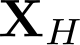
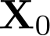
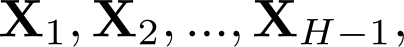
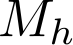

Deep Gaussian Processes (deep GPs)
This page demonstrates the capabilities of deep GPs and describes examples of how to use these models with the provided MATLAB release.
The deepGP software can be downloaded here.
Release Information
Current release is 1.0.
This is the release that fixed some bugs and added improvements to the initial release 0.1.
As well as downloading the deepGP software you need to obtain some dependencies, as described in the download page of deep GPs.
Version 0.1
This initial release is for the AISTATS 2013 submission.
What is a deep GP?
Below, read a small intro or jump to the examples.
A deep Gaussian process (deep GP) is a Deep Belief Network (DBN) formulated as a generative model where an initial input multivariate variable
 is mapped to an observed output multivariate variable  through a cascade of hidden layers  as can be seen in the figure below:
In contrast to traditional DBNs, here the transformation between layers is probabilistic and modelled with GPs. This leads to a powerful model (which, overall, is not a GP) which can learn from complex data in a non-parametric fashion.
Supervised and unsupervised learning are both supported. In the later case, the difference is that the layer on the top is hidden and learned from the data, similarly to all other hidden layers.
Sampling
Sampling from deep GP models is trivial; since it is a generative model, one just needs to start sampling from the top layer and use each sample as input for the layer below. For example, see the figure below:
On the very top layer, we have normal GP samples from an RBF covariance function which uses an equally spaced vector as input. These samples are, in turn, fed to the next layer as input and the output is fed to the last layer. The samples in the last layers show the kinds of functions that deep GPs can model. Obviously, deep GPs are more generic than GPs and can model more "difficult" functions, for example ones involving long range correlations between datapoints and a varying degree of smoothness, as the examples above.
For groovy visualisations of deep GP samples you can also check David Duvenaud's videos here and here.
Training
As shown above, sampling from deep GPs is trivial. The real challenge is to be able to efficiently train these models while also effectively regularizing them to avoid overfitting. Our deepGP framework is doing exactly this, by following a Bayesian paradigm. All latent spaces are integrated out (i.e. we learn a posterior distribution over them) and a variational framework allows for the approximation of the model evidence. This means that we can:- Have a posterior of the latent positions given the observations
- Approximate the evidence which means we can do Bayesian model selection automatically (penalize complex models)
- Find the structure of the deep network automatically, since the Bayesian framework "switches off" unnecessary nodes, connections or layers.
The training framework allows to group nodes in an MRD fashion (Damianou et al. [2012]) which is designed to model loosely correlated data sets within the same model. If we have  groups in layer h, then our framework allows to directly plug in this initial architecture and define and objective function which is split in terms as shown on the left of the picture below:
As can be seen, adding or removing layers/groups/nodes from this initial structure just adds factors in the final objective function.
DeepGP examples
Examples showed here can be recreated by running thetutorial.m script of the package.
Toy data - unsupervised learning
The deep GPs are first tested on toy data, created by sampling from a three-level stack of GPs. The true hierarchy is depicted in the demo, once the deep GP is trained. In short, from the top latent layer (X2) two intermediate latent signals are generated (XA and XB). These, in turn, together generate 10-dimensional observations (YA, YB) through sampling of another GP. These observations are then used to train the following models: a deep GP, a simple stacked PCA and a stacked Isomap method. From these models, only the deep GP marginalises the latent spaces and, in contrast to the other two, it is not given any information about the dimensionality of each true signal in the hierarchy; instead, this is learnt automatically through ARD. The reconstructions are shown below.

Reconstruction of the toy data. From left to right: original hierarhcy and reconstruction by deepGP, stacked Isomap and stacked PCA.
The deep GP finds the correct dimensionality for each hidden layer, but it also discovers latent signals which are closer to the real ones.
The model can be parametrized in many ways, and the demo here considers
a basic parameterization. You can experiment with different latent space
initialisations, different kernels (linear, non-linear, etc).
For other possible options check hsvargplvm_init.m and the various demos.
Toy data - supervised learning (regression / warped GP)
This is a simple regression demo which uses a toy dataset of input-output pairs [t, Y] generated as follows: given an initial equally spaced input t, we feed this to a GP from which we sample outputs X which constitute an intermediate latent space. These are in turn fed to another GP from which we sample outputs Y. This an implementation of a warped GP and can also be run for multivariate inputs/outputs. Deep GPs (that use sparse GP apprpoximations by default) are compared to full (non-sparse) GPs (aka 'ftc') and to sparse GPs with the 'fitc' approximation.
The above experiment is run multiple times with random sets, and the results are plotted for every trial, obtaining the plot below:
Modeling-wise, this demo differs from the unsupervised learning one in that the deep GP has observed inputs on the top layer. Then, the kernel used for the mapping between the top layer and the one below, couples all inputs.
The models can be parametrized in many ways, and the demo here considers
a basic parameterization. You can experiment with different latent space
initialisations, different kernels (linear, non-linear, etc).
For other possible options check hsvargplvm_init.m and the various demos.
Motion capture and multiview data
Here we recreate a motion capture data experiment from Lawrence and Moore [2007]. They used data from the CMU MOCAP database representing two subjects walking towards each other and performing a "high-five". To account for the correlated motions of the subjects we applied deepGPs with a two-level hierarchy where the two observation sets were taken to be conditionally independent given their parent latent layer. In the layer closest to the data we associated each GP-LVM with a different set of ARD parameters, allowing the layer above to be used in different ways for each character. DeepGP discovered a common subspace in the intermediate layer. This is expected, as the two subjects perform very similar motions with opposite directions. The optimised ARD kernel weights are also a means of automatically selecting the dimensionality of each layer and subspace. This kind of modelling is impossible for a MAP method like [Lawrence and Moore, 2007] which requires the exact latent structure to be given a priori. The full latent space learned by the aforementioned MAP method is plotted in the figure below:Further, we can sample from these spaces to see what kind of information they encode. Indeed, we observed that the top layer generates outputs which correspond to different variations of the whole sequence, while when sampling from the first layer we obtain outputs which only differ in a small subset of the output dimensions, e.g. those corresponding to the subjects hand.
Digits data and feature learning
This experiment demonstrates the ability of our model to learn latent features of increasing abstraction and we demonstrate the usefulness of an analytic bound on the model evidence as a means of evaluating the quality of the model fit for different choices of the overall depth of the hierarchy. We subsampled a small data set consisting of examples for each of the digits {0, 1, 6} taken from the USPS handwritten digit database.Model selection and reconstruction
We experimented with deep GPs of depth ranging from 1 (equivalent to Bayesian GP-LVM) to 9 hidden layers and evaluated each model by measuring the nearest neighbour error in the latent features discovered in each hierarchy. We found that the Bayesian training framework was trying to switch off models with more than 5 hidden layers. Also, the best performance (in terms of NN error) was achieved with the model which had the highest marginal likelihood, the one with 5 layers. The 2D projection of the discovered space of this model is shown below and illustrates an excellent separation between classes:
Feature discovery and sampling
For the 5-layer model, we also sampled from each level of the hierarchy and generated new data by interpolating from the training ones. We did that by varying one latent dimension of one layer at a time, to discover what each dimension encodes. The ARD kernel weights (one for each dimension and layer) show us which dimensions are relevant (and how "linear" they are).In the figure below one can see the optimised weights per layer and some samples from some dimension of each layer.

The figure demonstrates that, as we rise in the hierarchy, features of increasing abstraction are accounted for: the lower levels encode local features whereas the higher ones encode more abstract information.
We discovered many more features, but here we show only some for each layer. The file demDigitsDemonstration.m lets you interactively sample from any layer/dimension. A short demonstration of how this is done, is shown in the video below: